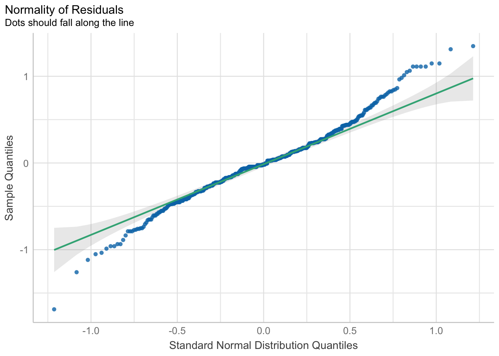

Chapter 2 Brushing Up on the Basics
2.1 Mixed ANOVA R
Below I have conducted a mixed ANOVA based on the data from the dataset iris.
The dependent variable used in said calculation are the respective measurements recorded in the dataset.
“Species” is the between-factor, with “Setosa”, “Versicolor” and “Virginica” being its factor levels.
“Part of Flower” is the first within-factor with “Petal” and “Sepal” being its factor levels.
“Kind of Measurement” is the second within-factor with “Width” and “Length” being its factor levels.
2.1.1 Preperation of Dataset iris R
Before a mixed ANOVA analysis can be conducted the data in the dataset iris needs to be reordered and recoded accordingly.
# Create custom function to recode variables
recode.var <- function(x, # what vector do you want to recode?
old, # what values do you want to change?
new, # what should the new values be?
otherNA = TRUE, # should other values be converted to NA?
numeric = TRUE) { # should result be numeric?
x.new <- x # copy vector to x.new
if(class(x.new) == "factor") {x.new <- paste(x.new)} # remove factors
for(i in 1:length(old)) { # loop through all old values:
x.new[x == old[i]] <- new[i]
}
if(otherNA) { # convert unspecified values to NA:
x.new[(x %in% old) == FALSE] <- NA
}
if(numeric) {x.new <- as.numeric(x.new)} # convert vector to numeric values
return(x.new) # return new vector
}
# Create appropriate subset of 'iris'
iris_anova_prep1 <- iris[,1:4]
iris_anova_prep1$id <- c(1:150)
# Rename and recode 'TCategory' for better readability
iris_anova_prep1$Species <- recode.var(iris$TCategory,
old = c("I.setosa",
"I.versicolor",
"I.virginica"),
new = c("Setosa",
"Versicolor",
"Virginica"),
otherNA = FALSE,
numeric = FALSE)
# Save 'Species' as factor variable
iris_anova_prep1$Species <- as.factor(iris_anova_prep1$Species)
# Reformat dataframe from wide to long format with temporary variable 'wtifl_prep'
iris_anova_prep1 <- gather(iris_anova_prep1,
wtifl_prep,
Measurement,
Sepal_length:Petal_width,
factor_key=TRUE)
head(iris_anova_prep1)## id Species wtifl_prep Measurement
## 1 1 Setosa Sepal_length 5.1
## 2 2 Setosa Sepal_length 4.9
## 3 3 Setosa Sepal_length 4.7
## 4 4 Setosa Sepal_length 4.6
## 5 5 Setosa Sepal_length 5.0
## 6 6 Setosa Sepal_length 5.4# Prepare creation of within-factor variables 'Part_of_Flower' and 'Kind_of_Measurement'
iris_anova_prep2 <- iris_anova_prep1
iris_anova_prep2$Part_of_Flower <- iris_anova_prep2$wtifl_prep
iris_anova_prep2$Kind_of_Measurement <- iris_anova_prep2$wtifl_prep
# Split temporary variable 'wtifl_prep' into within-factor variables 'Part_of_Flower' and 'Kind_of_Measurement'
iris_anova_prep2$Part_of_Flower <-
recode.var(iris_anova_prep2$Part_of_Flower,
old = c("Sepal_length",
"Sepal_width",
"Petal_length",
"Petal_width"),
new = c("Sepal",
"Sepal",
"Petal",
"Petal"),
otherNA = FALSE,
numeric = FALSE)
iris_anova_prep2$Kind_of_Measurement <-
recode.var(iris_anova_prep2$Kind_of_Measurement,
old = c("Sepal_length",
"Sepal_width",
"Petal_length",
"Petal_width"),
new = c("Length",
"Width",
"Length",
"Width"),
otherNA = FALSE,
numeric = FALSE)
# Save 'Part_of_Flower' and 'Kind_of_Measurement' as factor variables
iris_anova_prep2$Part_of_Flower <- as.factor(iris_anova_prep2$Part_of_Flower)
iris_anova_prep2$Kind_of_Measurement <- as.factor(iris_anova_prep2$Kind_of_Measurement)
# Delete temporary variable 'wtifl_prep'
iris_anova <- iris_anova_prep2[,c(1:2,5,6,4)]
head(iris_anova)## id Species Part_of_Flower Kind_of_Measurement Measurement
## 1 1 Setosa Sepal Length 5.1
## 2 2 Setosa Sepal Length 4.9
## 3 3 Setosa Sepal Length 4.7
## 4 4 Setosa Sepal Length 4.6
## 5 5 Setosa Sepal Length 5.0
## 6 6 Setosa Sepal Length 5.42.1.2 Creating the ANOVA Model
iris_anova_model <- aov_ez("id", "Measurement", iris_anova, between = "Species", within = c("Part_of_Flower",
"Kind_of_Measurement"))Note. Type III Sums of Squares are used for the calculation of the ANOVA
2.1.3 Testing Assumptions of the ANOVA R
2.1.3.1 Observations are Independent and Identically Distributed
This assumption cannot be tested empirically, but needs to hold on conceptual or logical grounds. For the purpose of this exercise I am therefore simply assuming, that said assumption holds.
2.1.3.2 Homogeneity of Variances
The variances across all the groups (cells) of between-subject effects should be the same. In order to test this assumption Levene’s Test is conducted.
check_homogeneity(iris_anova_model)## Warning: Variances differ between groups (Levene's Test, p = 0.001).These results indicate that the assumption of homogeneity of variances is in fact significantly violated.
2.1.3.3 Sphericity
For within-subjects effects, sphericity is the condition where the variances of the differences between all possible pairs of within-subject conditions (i.e., levels of the independent variable) are equal. In order to test this assumption Mauchly’s test is conducted.
check_sphericity(iris_anova_model)## OK: Data seems to be spherical (p > .999).These results indicate that the assumption of sphericity is not significantly violated.
2.1.3.4 Normality of Residuals
The errors used for the estimation of the error term(s) (MSE) are normally distributed. In order to test this assumption the Shapiro-Wilk test is conducted.
iris_anova_norm <- check_normality(iris_anova_model)
iris_anova_norm## Warning: Non-normality of residuals detected (p < .001).Since this test tends to have high type-I error rates, a visual inspection of the residuals using a quantile-quantile plot (qq-plots) is preferred.
plot(iris_anova_norm, type = "qq")
Figure 2.1: Quantile-Quantile plot
If the residuals were normally distributed, we would see them falling close to the diagonal line, inside the 95% confidence bands around the qq-line. Unfortunately it seems, that the assumption of the normality of residuals is in deed significantly violated.
2.1.4 Results of Mixed ANOVA
summary(iris_anova_model)##
## Univariate Type III Repeated-Measures ANOVA Assuming Sphericity
##
## Sum Sq num Df Error SS den Df F value
## (Intercept) 7198.2 1 53.966 147 19607.2785
## Species 310.5 2 53.966 147 422.9379
## Part_of_Flower 582.1 1 10.664 147 8024.8551
## Species:Part_of_Flower 152.6 2 10.664 147 1051.5113
## Kind_of_Measurement 1073.1 1 20.254 147 7788.1235
## Species:Kind_of_Measurement 127.9 2 20.254 147 463.9684
## Part_of_Flower:Kind_of_Measurement 2.0 1 4.503 147 64.3902
## Species:Part_of_Flower:Kind_of_Measurement 0.5 2 4.503 147 8.0009
## Pr(>F)
## (Intercept) < 2.2e-16 ***
## Species < 2.2e-16 ***
## Part_of_Flower < 2.2e-16 ***
## Species:Part_of_Flower < 2.2e-16 ***
## Kind_of_Measurement < 2.2e-16 ***
## Species:Kind_of_Measurement < 2.2e-16 ***
## Part_of_Flower:Kind_of_Measurement 2.974e-13 ***
## Species:Part_of_Flower:Kind_of_Measurement 0.0005031 ***
## ---
## Signif. codes: 0 '***' 0.001 '**' 0.01 '*' 0.05 '.' 0.1 ' ' 1